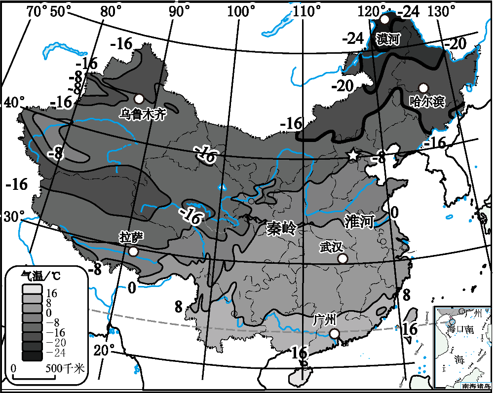

2026年北京平谷区初中学业合格考试地理试卷 · 选择题 第11、12、13、14、15题
俄罗斯自然资源丰富，种类齐全，是世界上少数几个资源基本自给的国家之一。丰富的自然资源为其工业发展奠定了基础。下图为俄罗斯主要工业区和矿产资源分布图。读图，完成下面小题。

11. 结合矿产、工业区与地形分布，判断俄罗斯人口、城市主要集中分布在（ ）
A. 东欧平原B. 西西伯利亚平原
C. 中西伯利亚高原D. 东西伯利亚山地
剪纸是中国传统民间艺术。下图为展示傣族风俗习惯的剪纸作品，傣族集中分布在云南省。读图，完成下面小题。
12. 傣族的传统节日是（ ）
A. 花山节B. 那达慕大会C. 三月街D. 泼水节
13. 剪纸是我国优秀传统民间艺术，承载着地域文化与生活智慧，体现了文化与地理环境的密切关系。体现剪纸艺术价值与传承的是（ ）
A. 剪纸仅用于装饰，无实际文化价值
B. 现代科技发展后，剪纸已无传承必要
C. 剪纸只流行于北方地区，与南方地理环境无关
D. 剪纸题材多反映当地环境，是地域文化的重要载体
14. 云南省的行政中心是（ ）
A. 昆明B. 桂林C. 成都D. 拉萨
目前，我国越来越多的老年人选择“冬南夏北”的候鸟式生活：冬季到南方温暖地区居住，夏季回北方凉爽地区避暑。这种生活方式充分体现了我国气候的特点，也反映了社会发展给人民生活带来的便利。下图为中国1月平均气温分布图。读图，完成下面小题。

15. 读图可知，我国1月平均气温分布特点是（ ）
A. 全国普遍高温B. 南北温差小，冬季温和
C. 南北温差大，越往北气温越低D. 气温由东向西逐渐升高